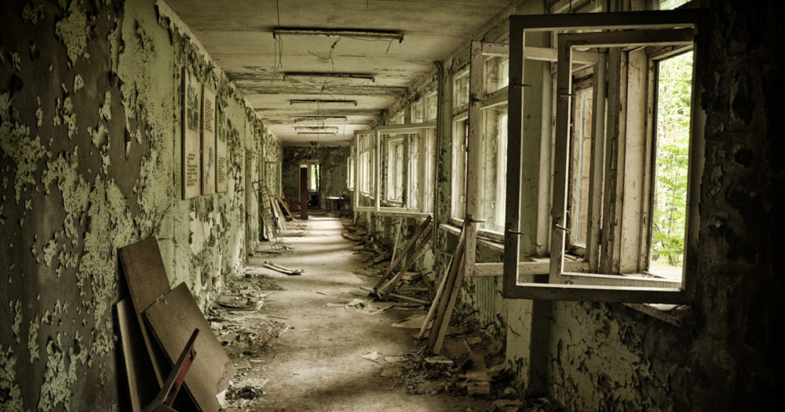
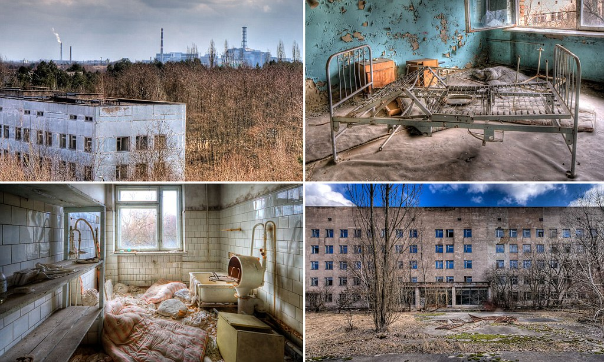
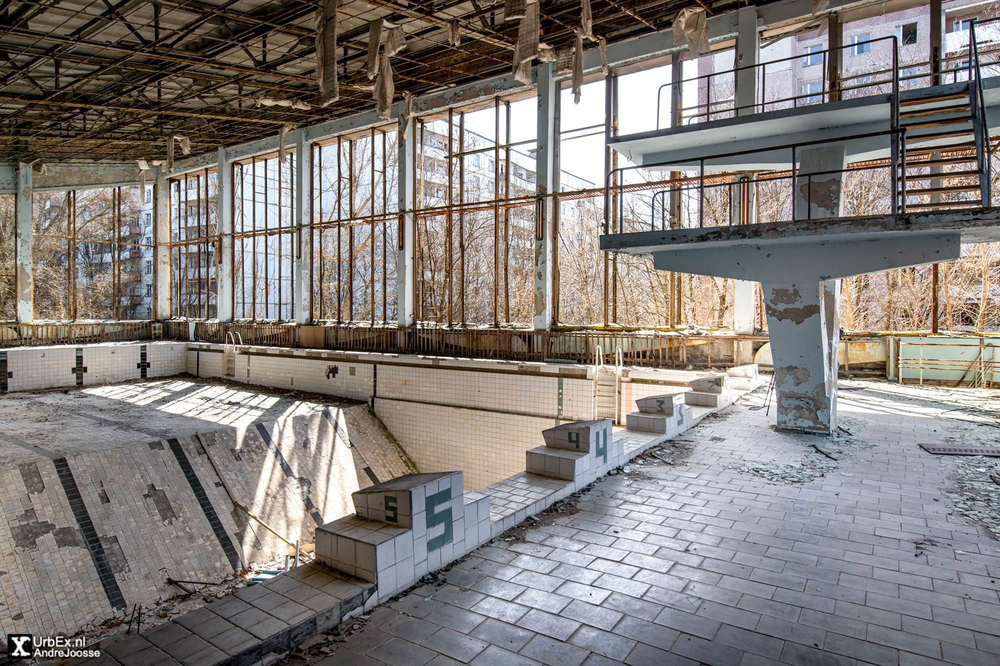
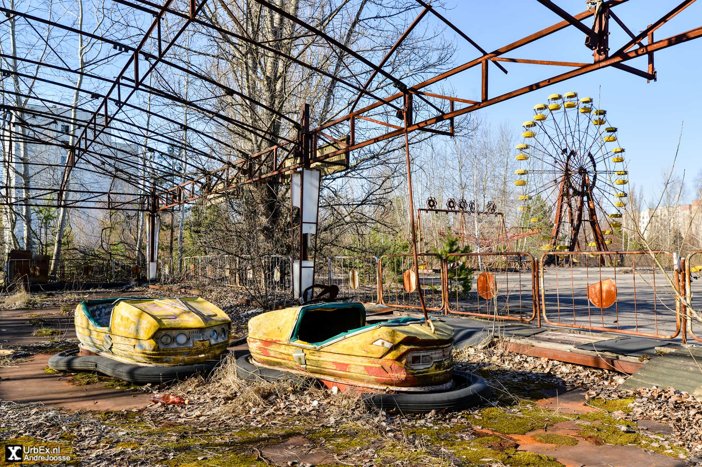
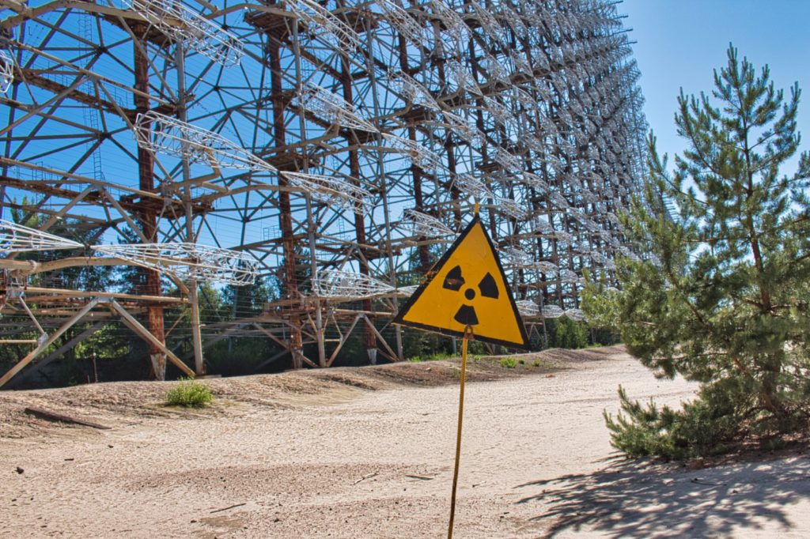

Chernobyl needs no introduction. This isn’t a history of the disaster but merely a guide on some of the most eerie and fascinating places left in the exclusion zone. If you’re planning on heading to Chernobyl make sure you include these places on your itinerary. To see them all and many more, you’ll need to book a two day tour option which includes a night in the infamous Chernobyl hotel – situated inside the exclusion zone.
Perhaps the most eerie place in the abandoned town of Pripyat is the remains of middle school number 3. It’s infamous for its collection of gas masks, hundreds of which are strewn across the floor of one classroom. Like most Soviet schools, gas masks were common to provide protection against nuclear, biological or chemical attacks. After the disaster they were looted and discarded. 
This large building and its medical equipment remains largely intact. Its basement however is one of the most radioactive places in the zone. It was here that the first respondents were treated on the night of the reactor explosion. Their toxic clothing were thrown into the basement and covered with sand. 
Remarkably the swimming pool remained in use up until 1998, over 10 years after the disaster. It was primarily used by the liquidators – those professionals who were called in to limit the amount of damage caused by the explosion. As such the swimming pool is considered one of the cleanest places in the zone. Today it’s completely empty, but the diving platform, timing clock and adjacent basketball court all remain. 
Located in the center of Pripyat, the park and its ferris wheel in particular constitute the most iconic symbols of the Chernobyl disaster. The park was not even finished when the order to evacuate the city came. It was due to open the following week for the May 1 celebrations. As well as the ferris wheel, other rides included the bumper cars, paratrooper ride and swing boats. 
The Duga radar, or Russian “woodpecker” as it was commonly known, was a Soviet era early warning missile defence system. This massive and extremely powerful structure was decommissioned in December 1989 coinciding with the end of the cold war. It remains intact and it is sometimes possible to climb to the top (A hefty bribe is required…) 